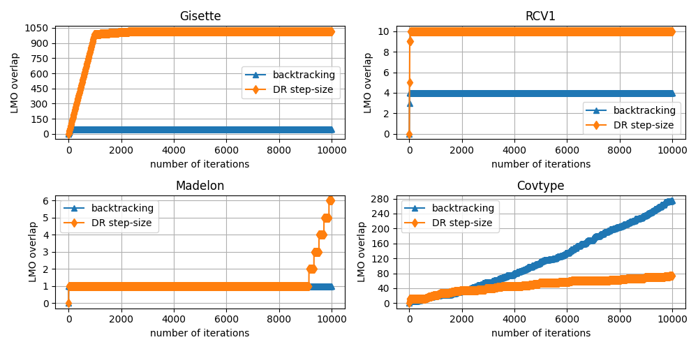

Note
Click here to download the full example code
Update Direction Overlap in Frank-Wolfe¶
This example quantifies how many times the Frank-Wolfe algorithm selects the same extremal vertex (which will determine the update direction) twice in a row. Selecting the same vertex twice in a row is symptomatic of a poor step-size, as it implies that the last two updates could have been replaced by a single update with larger step-size.
Out:
Running on the Gisette dataset
Running backtracking variant
Running DR step-size variant
Running on the RCV1 dataset
Running backtracking variant
Running DR step-size variant
Running on the Madelon dataset
Running backtracking variant
Running DR step-size variant
Running on the Covtype dataset
Running backtracking variant
Running DR step-size variant
import copt as cp
import matplotlib.pyplot as plt
from matplotlib.ticker import MaxNLocator
import numpy as np
# datasets and their respective loading functions
import copt.constraint
import copt.loss
datasets = [
("Gisette", cp.datasets.load_gisette),
("RCV1", cp.datasets.load_rcv1),
("Madelon", cp.datasets.load_madelon),
("Covtype", cp.datasets.load_covtype),
]
fig, axes = plt.subplots(nrows=2, ncols=2, figsize=(10, 5))
for ax, (dataset_title, load_data) in zip(axes.ravel(), datasets):
print("Running on the %s dataset" % dataset_title)
X, y = load_data()
n_samples, n_features = X.shape
l1_ball = copt.constraint.L1Ball(n_features / 2.0)
f = copt.loss.LogLoss(X, y)
x0 = np.zeros(n_features)
for i, (step, label, marker) in enumerate(
[["backtracking", "backtracking", "^"], ["DR", "DR step-size", "d"]]
):
print("Running %s variant" % label)
st_prev = []
overlap = []
def trace(kw):
"""Store vertex overlap during execution of the algorithm."""
s_t = kw["update_direction"] + kw["x"]
if st_prev:
# check if the vertex of this and the previous iterate
# coincide. Since these might be sparse vectors, we use
# sparse.linalg.norm to make the comparison
prev_overlap = overlap[-1]
if np.linalg.norm(st_prev[0] - s_t) == 0:
overlap.append(prev_overlap + 1)
else:
overlap.append(prev_overlap)
st_prev[0] = s_t
else:
overlap.append(0)
st_prev.append(s_t)
cp.minimize_frank_wolfe(
f.f_grad,
x0,
l1_ball.lmo,
callback=trace,
max_iter=int(1e4),
step=step,
verbose=True,
lipschitz=f.lipschitz,
)
ax.plot(overlap, label=label, marker=marker, markevery=7 + i)
ax.yaxis.set_major_locator(MaxNLocator(integer=True))
ax.legend()
ax.set_xlabel("number of iterations")
ax.set_ylabel("LMO overlap")
ax.set_title(dataset_title)
fig.tight_layout() # otherwise the right y-label is slightly clipped
ax.grid()
# plt.legend()
plt.show()
Total running time of the script: ( 197 minutes 42.808 seconds)
Estimated memory usage: 1911 MB